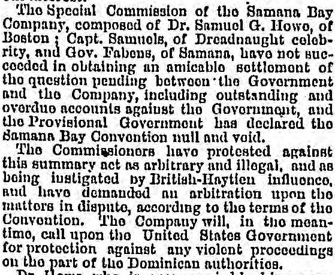
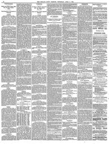

See the full pageVer la página completaFabous, of Samara, bavo not succeeded in obtaining an amicabloFabens, de Samaná, no han logrado obtener una amistosa
The Provisional Government declared the Samana Bay Convention null and void after a company represented by Dr. Samuel G. Howe, Captain Samuels, and Gov. Fabous failed to reach an amicable settlement regarding outstanding accounts. The company's commissioners protested the act as arbitrary, alleging British-Haitian influence, demanded arbitration, and announced plans to call upon the United States Government for protection against violent proceedings by Dominican authorities. Meanwhile, Dr. Howe remained at Samana as Acting-Governor pro tem., while Messrs. Samuels and Fabons returned to New York to report the situation.El Gobierno Provisional declaró nula y sin valor la Convención de la Bahía de Samaná después de que una compañía representada por el Dr. Samuel G. Howe, el capitán Samuels y el gobernador Fabens no lograra llegar a un acuerdo amistoso sobre las cuentas pendientes. Los comisionados de la empresa protestaron por la medida calificándola de arbitraria, alegaron influencia británico-haitiana, exigieron arbitraje y anunciaron planes para recurrir al Gobierno de los Estados Unidos en demanda de protección frente a los actos de violencia de las autoridades dominicanas. Mientras tanto, el Dr. Howe permaneció en Samaná como gobernador interino pro tempore, al tiempo que los señores Samuels y Fabens regresaron a Nueva York para informar sobre la situación.
FULL TEXT:TRADUCCIÓN:
position, and had afterwards visited St. Domingo with propositions from the Haytien Government for a treaty between the two Republics. Among the conditions of the proposed treaty, it is said, were the cession to Hayti of the disputed territory on the frontier and the annulment of the Samana Bay Convention, made with citizens of the United States. The conditions being admitted by the Dominican Government, Hayti, (or England) was to loan a considerable sum to St. Domingo, payable at convenience and without interest.posición, y después había visitado Santo Domingo con proposiciones del Gobierno haitiano para un tratado entre las dos Repúblicas. Entre las condiciones del tratado propuesto, se dice, estaban la cesión a Haití del territorio disputado en la frontera y la anulación de la Convención de la Bahía de Samaná, hecha con ciudadanos de los Estados Unidos. Admitidas las condiciones por el Gobierno dominicano, Haití, (o Inglaterra) prestaría una suma considerable a Santo Domingo, pagadera a conveniencia y sin interés.
The Special Commission of the Samana Bay Company, composed of Dr. Samuel G. Howe, of Boston; Capt. Samuels, of Dreadnaught celebrity, and Gov. Fabens, of Samana, have not succeeded in obtaining an amicable settlement of the question pending between the Government and the Company, including outstanding and overdue accounts against the Government, and the Provisional Government has declared the Samana Bay Convention null and void.La Comisión Especial de la Compañía de la Bahía de Samaná, compuesta por el Dr. Samuel G. Howe, de Boston; el capitán Samuels, de la celebridad del Dreadnaught, y el gobernador Fabens, de Samaná, no ha logrado obtener un arreglo amistoso de la cuestión pendiente entre el Gobierno y la Compañía, incluyendo cuentas pendientes y vencidas contra el Gobierno, y el Gobierno Provisional ha declarado la Convención de la Bahía de Samaná nula y sin valor.
The Commissioners have protested against this summary act as arbitrary and illegal, and as being instigated by British-Haytien influence, and have demanded an arbitration upon the matters in dispute, according to the terms of the Convention. The Company will, in the meantime, call upon the United States Government for protection against any violent proceedings on the part of the Dominican authorities.Los Comisionados han protestado contra este acto sumario como arbitrario e ilegal, y como instigado por la influencia británico-haitiana, y han demandado un arbitraje sobre los asuntos en disputa, según los términos de la Convención. La Compañía, mientras tanto, acudirá al Gobierno de los Estados Unidos por protección contra cualquier procedimiento violento por parte de las autoridades dominicanas.
Dr. Howe, who is accompanied by his accomplished wife, Mrs. Julia Ward Howe, remains at Samana as Acting-Governor pro tem., while Messrs. Samuels and Fabens return to New York by the Tybee to report the situation to the Company.El Dr. Howe, que está acompañado por su consumada esposa, la Sra. Julia Ward Howe, permanece en Samaná como Gobernador interino temporal, mientras los Sres. Samuels y Fabens regresan a Nueva York en el Tybee para informar la situación a la Compañía.
THE PROCLAMATION ANNULLING THE CONTRACT.LA PROCLAMA QUE ANULA EL CONTRATO.
Ignacio Maria Gonzalez, General of the National Armies:Ignacio Maria Gonzalez, General de los Ejércitos Nacionales:
WHEREAS, In conformity with Article 10 of the contract for the lease of the Peninsula and Bay of Samana and its keys, made in this city on the 28th December, 1872, between the Government of the Republic represented by the then Minister of the Interior and Police and Foreign Relations, Citizen Manuel Maria Gautier, and Messrs. Samuel Samuels, T. Scott Stewart, and Burton N. Harrison, Commissioners of the Company which was called and by decree dated 19th February, 1873, of the Dominican Executive is called the “Samana Bay Company of St. Domingo,” it was stipulated and decreed that the amount of rent fixed at $150,000 annually should be paid each year in advance on the 1st day of January.Considerando que, En conformidad con el Artículo 10 del contrato para el arrendamiento de la Península y la Bahía de Samaná y sus cayos, hecho en esta ciudad el 28 de diciembre de 1872, entre el Gobierno de la República representado por el entonces Ministro del Interior y Policía y Relaciones Exteriores, el Ciudadano Manuel Maria Gautier, y los Sres. Samuel Samuels, T. Scott Stewart, y Burton N. Harrison, Comisionados de la Compañía que fue llamada y por decreto fechado el 19 de febrero de 1873, del Ejecutivo dominicano es llamada la «Samana Bay Company of St. Domingo», fue estipulado y decretado que la cantidad de renta fijada en $150,000 anuales debería pagarse cada año por adelantado el 1 de enero.
WHEREAS, According to Art. 11 of the aforesaid contract, the non-payment of the annual rent at time fixed upon, and, in case of war or other circumstance of fuerza mayor, legally proved one month after that date at furthest incurs the rescinding of the Convention, it being so expressly stipulated.Considerando que, Según el Art. 11 del contrato antedicho, la falta de pago de la renta anual en el momento fijado, y, en caso de guerra u otra circunstancia de fuerza mayor, legalmente probada un mes después de esa fecha a más tardar incurre en la rescisión de la Convención, estando así estipulado expresamente.
WHEREAS, When the Provisional Government, under date of 7th December, 1873, ordered the withholding of the annual payment due on the 1st January of the present year, because in virtue of the proclamation of the 23d of November previous, it had ignored the authority of Gen. Baez, it did so solely with the object of avoiding future difficulties with the Company if it should pay the late administration.Considerando que, Cuando el Gobierno Provisional, con fecha del 7 de diciembre de 1873, ordenó la retención del pago anual debido el 1 de enero del presente año, porque en virtud de la proclama del 23 de noviembre anterior, había ignorado la autoridad del general Báez, lo hizo solamente con el objeto de evitar dificultades futuras con la Compañía si pagara a la difunta administración.
WHEREAS, In the official notice that it gave to the Company, on the above mentioned date of the 7th December, the Provisional Government signified to the Company that it would respect the Samana Bay Company Convention in the form stipulated by the late Government and under the conditions laid down therein.Considerando que, En el aviso oficial que dio a la Compañía, en la fecha arriba mencionada del 7 de diciembre, el Gobierno Provisional significó a la Compañía que respetaría la Convención de la Compañía de la Bahía de Samaná en la forma estipulada por el difunto Gobierno y bajo las condiciones establecidas en ella.
WHEREAS, The Company, through its Vice-President, Mr. Paul Spofford, under date of 10th January of the present year, advises the Minister of Foreign Relations that the annual payment has been delayed, thus conforming to the order of the said Minister, while at the same time he states that he is awaiting official communications upon the subject.Considerando que, La Compañía, por medio de su Vicepresidente, el Sr. Paul Spofford, con fecha del 10 de enero del presente año, avisa al Ministro de Relaciones Exteriores que el pago anual ha sido demorado, conformándose así a la orden de dicho Ministro, mientras que al mismo tiempo afirma que está esperando comunicaciones oficiales sobre el tema.
WHEREAS, In virtue of the advices to which the preceding paragraph refers the Treasury Department, by resolution of the Government and by order of the Secretary of the Treasury, drew in favor of several merchants of this and other places in the Republic and abroad for the sum of $11,084 upon the Company and on account of the rent due since the 1st of last January, the bills having been protested for non-acceptance, notwithstanding the assurances that the Government had that they would be accepted.Considerando que, En virtud de los avisos a que se refiere el párrafo precedente, el Departamento de Hacienda, por resolución del Gobierno y por orden del Secretario de Hacienda, giró en favor de varios comerciantes de este y otros lugares de la República y del extranjero por la suma de $11,084 contra la Compañía y a cuenta de la renta debida desde el 1 de enero pasado, habiendo sido las letras protestadas por no aceptación, no obstante las seguridades que el Gobierno tenía de que serían aceptadas.
Chicago Daily Tribune. Chicago, Ill., April 9, 1874. Page 8.